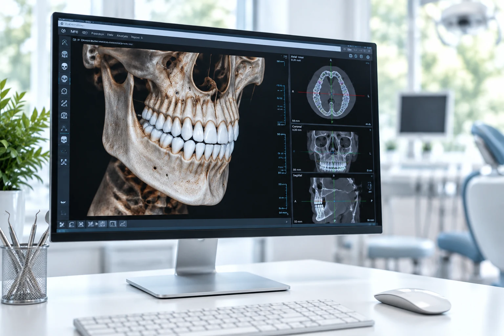
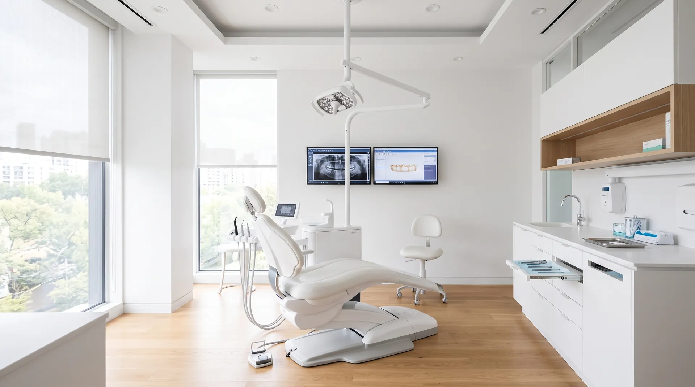
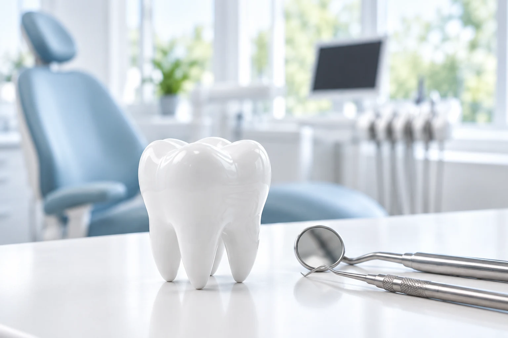
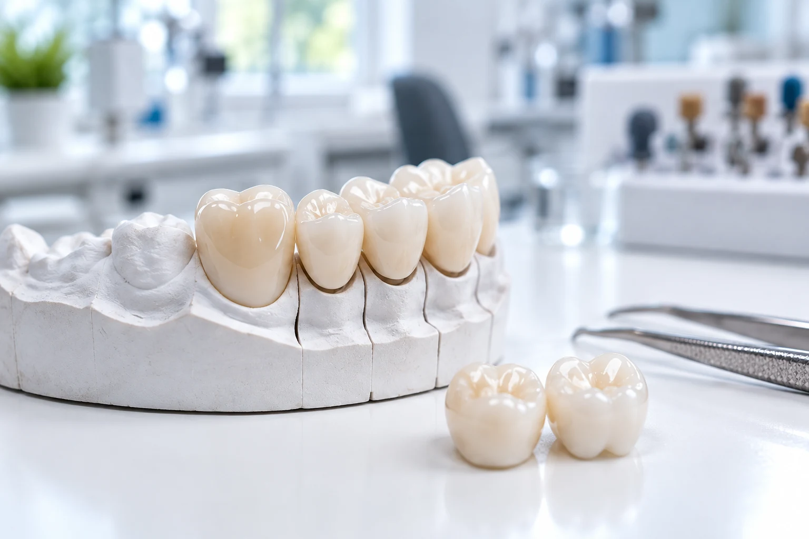

01
Консультация
Осмотр, разговор о том, что беспокоит, и понятный план лечения со стоимостью.
Записаться ↗
Стоматология в Сургуте
Стоматологический кабинет Б. В. Кузнецова на улице 30 лет Победы. Принимаем по записи в будние дни — ко времени, без долгого ожидания в коридоре.
Направления
На первом приёме осмотрим, объясним, что происходит, и предложим план. Стоимость и сроки называем до начала лечения. Если нужной услуги в кабинете нет, честно скажем об этом и подскажем, куда обратиться.

Осмотр, разговор о том, что беспокоит, и понятный план лечения со стоимостью.
Записаться ↗
Восстанавливаем форму и функцию зуба. Каждый шаг проговариваем заранее, без спешки.
Записаться ↗
Восстановление утраченных зубов. Варианты, сроки и цену обсуждаем до начала работы.
Узнать стоимость ↗Зависит от клинической ситуации и объёма работы. Точную сумму назовём на консультации — до того, как начнём лечение.
Позвонить в клиникуЕсть противопоказания. Перед лечением нужна консультация специалиста — при сомнениях обратитесь к врачу.
Наши врачи
К кому записаться с вашим вопросом — подскажет администратор по телефону: расскажите, что беспокоит, и он подберёт врача и время.
Стоматолог-терапевт
Стаж 18 лет
Лечение зубов, восстановление формы, работа с чувствительностью.
Стоматолог-ортопед
Стаж 14 лет
Протезирование, замена ранее установленных конструкций.
Стоматолог-гигиенист
Стаж 9 лет
Профилактика, подготовка к лечению и домашний уход.
О клинике
Один кабинет, спокойный приём по времени и понятные объяснения: что делаем, зачем и сколько это будет стоить.
Приём ведёт ООО «Стоматологический кабинет Б. В. Кузнецова». Сведения о лицензии и документы для налогового вычета предоставляем по запросу — скажите об этом администратору.
Фотографии
Нажмите на фотографию, чтобы открыть её во весь экран.
Отзывы на Яндекс Картах
Выбирал клинику по совету близких. Спустя три года после лечения результат сохраняется, нареканий нет.
Много лет прохожу здесь лечение и протезирование. Отмечу профессионализм врача, индивидуальный подход, вежливого администратора и приём без очереди.
Обратилась для удаления зуба, но услугу в клинике не получила и была направлена в другое учреждение.
Как проходит визит
Расскажите, что беспокоит. Сразу скажем, чем поможем и сколько времени займёт приём.
Администратор подберёт удобное время в будний день с 09:00 до 19:00.
Второй этаж, кабинет № 221. Возьмите паспорт, а если есть — снимки и выписки от прежнего врача.
Перед визитом
Позвоните по номеру +7 (3462) 50-10-15 в рабочие часы. Онлайн-записи пока нет: администратор подберёт время в разговоре.
Принимаем в будни с 09:00 до 19:00. Суббота и воскресенье — выходные.
Документы для вычета готовим по запросу. Предупредите администратора при записи, чтобы всё было готово к визиту.
Кабинет на втором этаже, вход в здание — по ступеням, без пандуса. Позвоните заранее, если нужна помощь: подскажем, как удобнее попасть на приём.
Как нас найти